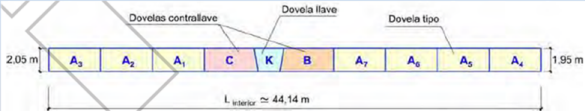
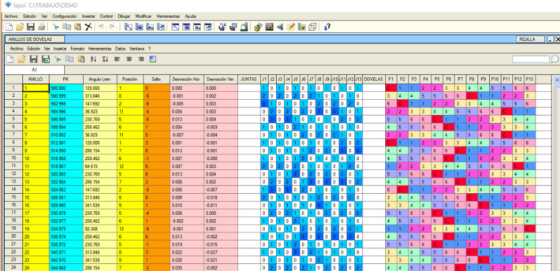
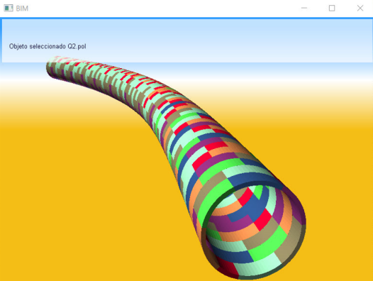
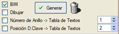

| |
|
SEGMENT HALKALARI
|
Bu menü, kurplu bir güzergaha sahip bir tünelde prekast segment halkalarının yerleşim etüdünü yapmak için kullanılır. Menünün amacı, kurplu bir güzergahta, üniversal segment halkaları kullanarak tünel kaplamasının güzergaha oturtulmasını (uygunluğunu) sağlamaktır. Üniversal Halka: Tek bir geometri ile hem yatay hem de düşey planda geniş bir kurp yarıçapı yelpazesine olanak tanıyan, kesik koni şeklinde bir halkadır. 

Çalışma Prosedürü:
 Hesaplama, kilit segmenti için olası pozisyon sayısını belirler. Kilit segmentinin veya Lmin noktasının dönüşü, halkaların birleşmesiyle oluşan tünel tüpünün eğriliğinin, tünel ekseninin yatay ve düşey güzergahından oluşan 3B ekseni takip etmesi için hesaplanır. Halkaların pozisyonunu içeren veri sayfası: 
Her bir halkanın başlangıç pozisyonuna göre konumu ve bir önceki halkaya göre yaptığı dönme açısı farkının etüdü. Her bir halkanın yatay ve düşey sapmaları, vb. Her halkadaki segmentlerin pozisyonunu içeren tünelin BIM modelinin elde edilmesi:

Çiz kutucuğu etkinleştirilerek: Segmentleri plan üzerinde (3B tel kafes model olarak) çizme imkanı. Halka numarası ve halkadaki kilit segmentinin pozisyonu ile iki adet metin tablosunu doldurma imkanı (her halkanın başlangıç ve bitiş kilometreleriyle birlikte). Bu, bu bilginin boykesitte çizilmesini sağlar. |